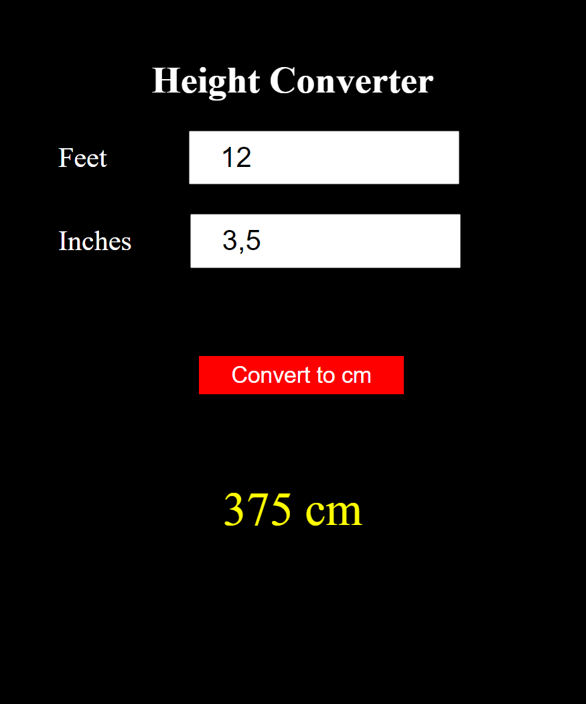
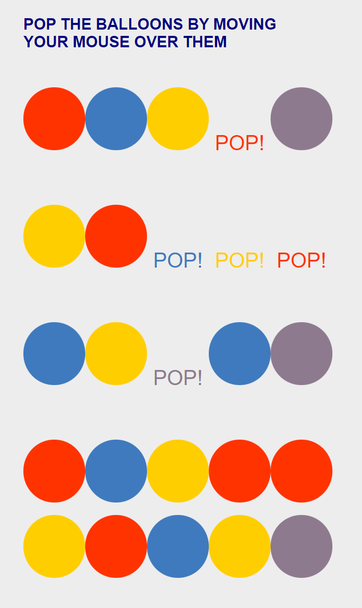

John Doe elvégzett munkái a webfejlesztő tanfolyamon

Magasság konvertáló példaprogram
Az egyszerű példaprogram láb és hüvelykben megadott magasságot konvártálja cm-ben magadott magasságra.

Óra példaprogram
Az egyszerű példaprogram egy digitális órát jelenít meg középreigazítva.

Lufi példaprogram
Az egyszerű példaprogramban az egérmutatóval ki lehet "pukkasztani" a kerek "lufikat", az összes lufi kipukkasztásakor egy üzenet jelenik meg a lufik helyén.